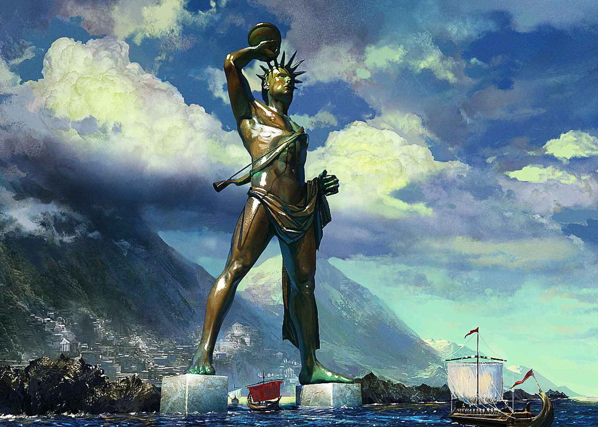
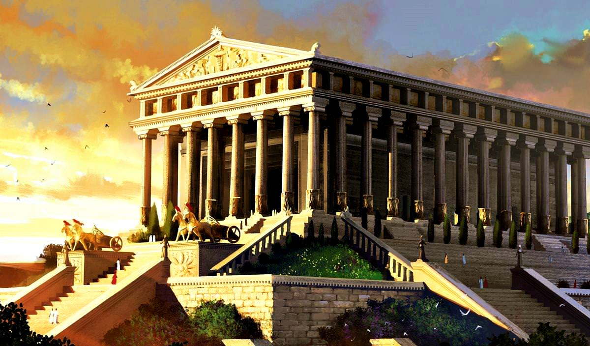
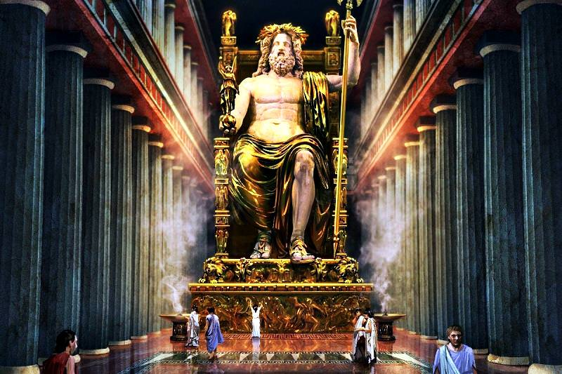
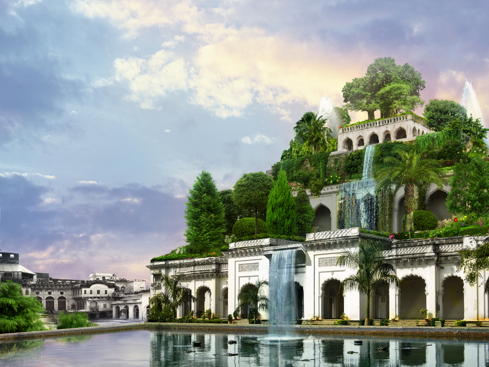

The Seven Wonders of the Ancient World were remarkable feats of architecture and engineering, showcasing
the creativity
and ingenuity of early civilizations. These structures, celebrated for their grandeur and historical
significance, stood
as symbols of human achievement, leaving a lasting legacy that continues to captivate the imagination.
The Great Pyramid, located at Giza on the west bank of the Nile River north of Cairo in Egypt, is the
only wonder of the
ancient world that has survived to the present day. It is part of a group of three pyramids-Khufu
(Cheops), Khafra
(Chephren) and Menkaura (Mycerimus)-that were built between 2700 B.C. and 2500 B.C. as royal tombs.
The largest and most
impressive is Khufu, known as “The Great Pyramid,” which covers 13 acres and is believed to contain
more than 2 million
stone blocks that weigh from two to 30 tons each.
Colossus of Rhodes

A towering bronze statue that once guarded the harbor of Rhodes
The Colossus of Rhodes was an enormous bronze sculpture of the sun god Helios built by the Rhodians
over 12 years in the
third century B.C. The city was the target of a Macedonian siege early in the fourth century B.C.
and, according to
legend, the Rhodians sold the tools and equipment left behind by the Macedonians to pay for the
Colossus. Designed by
the sculptor Chares, the statue was, at 100 feet, the tallest of the ancient world. It was completed
around 280 B.C. and
stood for sixty years until it was toppled in an earthquake. It was never rebuilt.
Lighthouse of Alexandria
A beacon that guided sailors in ancient Alexandria
The Lighthouse of Alexandria was located on a small island called Pharos near the city of Alexandria.
Designed by the
Greek architect Sostratos and completed around 270 B.C. during the reign of Ptolemy II, the
lighthouse helped to guide
Nile River ships in and out of the city's busy harbor.
Located in what is now southeastern Turkey, the Mausoleum at Halicarnassus was a tomb built by
Artemisia for her
husband, Mausolus, the king of Carnia in Asia Minor, after his death in 353 B.C. Mausolus was also
Artemisia's brother,
and, according to legend, she was so grief-stricken at his passing that she mixed his ashes with
water and drank them in
addition to ordering the mausoleum's construction. The massive mausoleum was made entirely of white
marble and is
thought to have been about 135 feet high.
Temple of Artemis

A magnificent temple dedicated to the goddess Artemis
There was actually more than one Temple of Artemis: A series of several altars and temples was
destroyed and then
restored on the same site in Ephesus, a Greek port city on the west coast of modern-day Turkey. The
most fabulous of
these structures were two marble temples built around 550 B.C. and 350 B.C., respectively. “Apart
from Olympus, the Sun
never looked on anything so grand,” the writer Antipater of Sidon wrote of the Temple of Artemis at
Ephesus.
Statue of Zeus at Olympia

A legendary ivory and gold statue of Zeus, ruler of the gods
The famed statue of Zeus, the king of the gods in Greek Mythology, was crafted by the Athenian
sculptor Phidias and
completed and placed in the temple of Zeus at Olympia, site of the ancient Olympics, around the
mid-fifth century B.C.
The statue depicted the god of thunder seated bare-chested at a wooden throne. Holding up the
thrones' armrests were two
carved sphinxes, mythical creatures with the head and chest of a woman, the body of lion and the
wings of a bird. The
statue of Zeus was richly decorated with gold and ivory.
Hanging Gardens of Babylon

A lush, tiered garden said to have been built for a homesick queen
According to ancient Greek poets, the Hanging Gardens of Babylon were built near the Euphrates River
in modern-day Iraq
by the Babylonian king Nebuchadnezzar II around 600 B.C. The gardens were said to have been planted
as high as 75 feet
in the air on a huge square brick terrace that was laid out in steps like a theater. The king
allegedly built the
towering gardens to ease his lover Amytis' homesickness for the natural beauty of her home in Media
(the northwestern
part of modern-day Iran). Later writers described how people could walk underneath the beautiful
gardens, which rested
on tall stone columns.